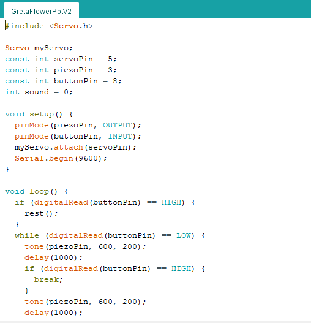
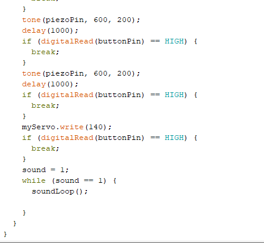
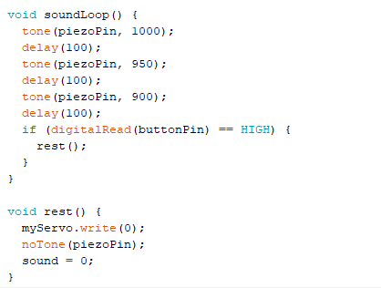
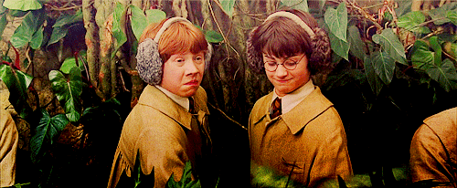

RESEARCH
BUDDY AND COZMO
Buddy: https://www.youtube.com/watch?v=1Z3kwsUjrbo&vl=en
Cozmo: https://anki.com/en-us/cozmo.html
Both Buddy and Cozmo are emotional robots that behave humanly and show affections through facial expressions, movements, words.
They’re both considered as toys but aim at also engaging adults and elderly people with the multiple functions which are adaptable to diverse sectors: food recipes, music playing, social media forecast, general calls and messaging system, alarm system, games, chasing ability and face recognition.
They can easily replace a pet for their playful attitude, but they’re also useful and mind opening for the young ones who have interest in technology and robotics.
ANIMATRONICS – Luxo Jr at Pixar Place
https://www.youtube.com/watch?v=DHY5kpGTsDEAnimatronics is a term used to describe mechatronic puppets. They’re mainly used in theme parks and animation movies and Pixar has greatly proved how these artificial creatures can become extremely popular.
Luxo Jr is the famous lamp that appears at every intro of a Pixar movie. Its popularity grew so big that it even became part of Disney’s Hollywood Studios, a theme park in the US.
What I love about this is how technology makes this object “human” and sympathetic, which inspires me in creating something relatable to humans but still unreal.
CELLULAR AUTOMATA Artworks
https://www.youtube.com/watch?v=dQJ5aEsP6Fs
https://softology.com.au/voc.htm
Cellular automata is a system consisted of cells which move within a grid according to their neighbour cells. The atom dynamics evolve through the grid, forming endless options of movement in the space. This technique is often used for artworks or multimedia projects.
video: https://softologyblog.wordpress.com/2019/12/28/3d-cellular-automata-3/
Here in the link above, it’s explained how to apply Cellular Automata into 3D space, and how the rules work. It’s fairly based on “Game of Life”, although it’s upgraded to 3D, while John Conway’s creation was 2D.
I find Cellular Automata mesmerizing and extremely eye-catching as it resembles life with its birth, survival and death state of cells’ life. I’d love to try out something in this field, although it looks as complex as fascinating.
TINKERING
DEMO 1: REALITY COMPOSER - WEIRD LOOKING BUDDY
I was curious to see whether it’s possible to create AR or VR content on the iPad. I found out about Reality Composer, a tool that allows users to insert already made assets or even create new ones by scratch and placing them in the virtual space. I decided to generate a creature by using simple shapes. I made it weird looking and I made it move its lips whenever interacted with. Here are videos and screenshots of the process:
The video:
Screenshots of my creature in the making:


The software is very striaghtforward and nice to use. I enjoyed creating something from scratch and seeing it getting alive step after step. It was also nice to find a lot of useful material online that provided me with the notions I needed to create an interactive character.
DEMO 2: MOODY PLANT
At this point, I wanted to see how an already existing object could be turned into an artificial creature.
For the second demo, I used Arduino, matrix display and potentiometer to give my tint plant a personality. By spinning the potentiometer, the screen changes from sad face to happy one. To make the display fit in the vase, I cut a square on its surface. Finally, I made a video that shows how the plant becomes happy after been taken care of.


Screenshots of the code:


I think it's interesting to see how a plant can embody a real character when provided with a facial expression. I think this demo is relevant to show how diverse and versatile technology is and how anything can be used for this purpose.
DEMO 3: TRYING OUT
At this point, I wanted to strongly challenge myself and I started looking for useful material about Cellular Automata.
I was so impressed during my research phase that I thought I could give it a try and make something cool with it.
I didn't take into consideration that it would have been way more difficult than I imagined.
I found some good tutorials where it was explained how to apply the rules, but it was still a bit too hard for me to fully grasp the mechanism.
I finally found a good source that explained how to incorporate Cellular Automata with Processing, creating an endless sequence of dots, lines, figures.
This helped me creating something:
The outcome is clearly faulty and my attempt to adapting the code to my preferences worked only partially. However, I was happy to see some characteristics such as the constant change of scenes, how one cell's action affects the next one and finally, I tried out different colors and I was happy to customize the code as much as possible.
Screenshots of codes:


DESIGN AND BUILD
THE ANGRY PLANT
For the Build and Design phase, I decided to go against all my research findings, and I created a plant that is angry and sleepy, a rather annoying creature that probably hates humans more than anything else. Here is the video. (or link to YT: https://youtu.be/qy8wcbY94D0 )
Here I place the code:
   How it works:
Aluminium foil is used as a button: there is a signal going to one metal place and the signal is received by the other one which is going to the Arduino. So on one end it has power, on the other hand it goes to Arduino.
When it’s touching the digital read is high (bc they’re touching so it reads the signal) and when you lift it up the circuit brakes and the signal is low: using a while loop that will run where the button pin is low. While it runs the code it will constantly still check if the metals are touching again.
How is it relevant: The Angry Plant is a creature who doesn’t like to be bothered, especially by humans. It’s artificial, yet it’s still nature as it’s mainly made up of plant and soil.
I got inspired by both the first research finding (Cozmo and Buddy) and also the second one (Animatronics: Pixar creatures) as I combined human traits into a technological device, adding the element of annoyance and robotic “scream”.
I got inspired by Harry Potter’s mandrake, a plant which reminds of a new born baby when it’s pulled off the ground.
REFLECTION
topic:
Growing up with Pixar’s creatures, it’s difficult not to envision a future where robots and humans interact on a daily basis, sharing their planet and their skills. Moreover, Affective Computing is aiming at developing emotion-detection technologies and allowing computational creatures to raise their empathizing skills towards human behaviours, hence there are going to be great changes in the coming decades that will reshape society as we know it today. While it might sound scary for some people who support a more traditionalistic view, I, on the other hand, find these innovations fundamental for the sake of our evolution. It’s exiting and insightful to wonder how my daily life could be altered if robots were active part of it: how would my study life be? Would there still be loneliness among humans? Would we be happier? I have plenty of questions about this topic, and although at times I fear a sort od robotic Darh Vader would drag our future generations into a life of darkness and slavery, I also trust in technology for the better, whose goal is to enhance humans’ lives, similarly to User Experience Designers’ ambitions.
my product:
My angry plant is like a constantly irritated pet who only enjoys sleeping all day long. It has human traits and it communicates through its voice, its face and its friendly reminding before being completely pissed: a countdown. It’s basically like saying “hey, you have a couple of seconds to put me back where you found me and let me sleep before I start screaming angrily”.
What inspired me greatly in making this creature is Harry Potter’s mandrake, a sort of plant who starts screaming/crying when pulled off the ground. It reminds of a baby who gets waken up against his will.

Before starting to design the technology for this challepxe, I thought about making a “buddy”, a “pet friend” who greets its human friend or moves like a dog or responds to human needs. I then realised it would be more interesting trying to empathize with the object rather than fulfilling our need as humans. Hence, I created a stubborn, hateful entity with specific characteristics, that could easily be play a role in a Pixar movie.
my experience with the technology:
I encountered many difficulties while coding the angry plant. Some of these were related to the physical prototype and its lack of space, others concerned the application of the code.
In regards to the code, the most difficult part was interrupting the countdown when the pot was placed back on the aluminium foil. It took me long time to understand where the flaw was but eventually, with the help of the teachers, I made it happen.
It was a fun project and I was happy to incorporate some drawings into the concept. Arduino allows me to shape my imaginary creatures into real creation and although it requires a lot of time and tinkering, the result it’s extremely satisfying.